Mars City ran an 848 MW fusion reactor and did not own a single cable. Fourteen roads and seven pipe racks were modelled; the electrical network was absent, and five knowledge cards cited “the grid” as if it were a thing that existed. This is the substation that closes it — and the ten ledgers that found out what a grid on Mars is actually allowed to be.
A rectifier hall, a switchgear line-up and a cable trench, sited between the reactor and the city — the missing link between 176 MWe and everything that spends it.
The generator hall next door makes 13.8 kV of alternating current, because a synchronous machine cannot do anything else. That AC travels 72 metres inside a pressurised duct and is rectified on arrival. Past this building there is no alternating current anywhere in Mars City.
What leaves instead is a bipolar ±10 kV DC trunk system on seventeen buried corridors, plus the surface furniture that makes an invisible network readable: route markers whose colour band gives the voltage and whose chevron points the way the cable goes, joint pits, and sealed tap cabinets.
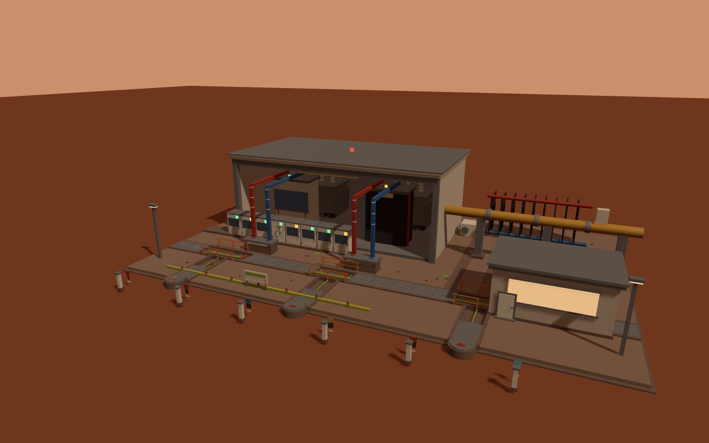
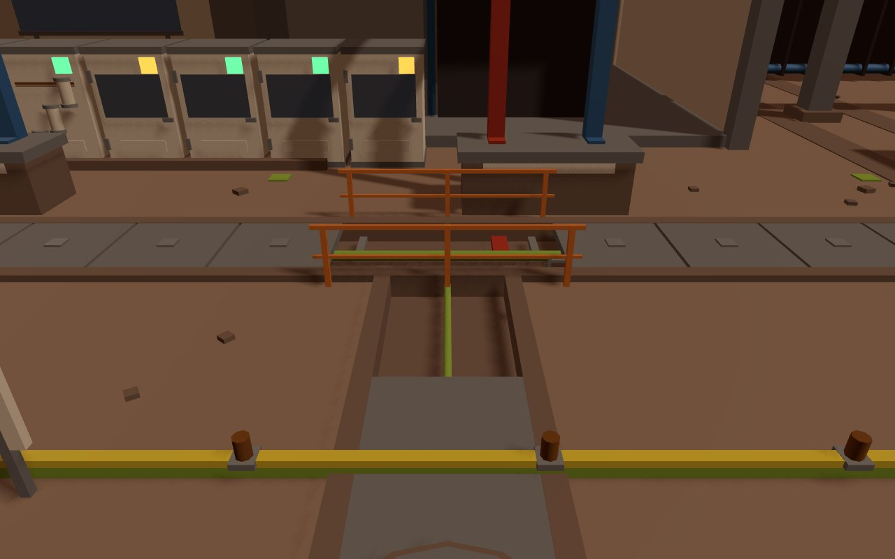
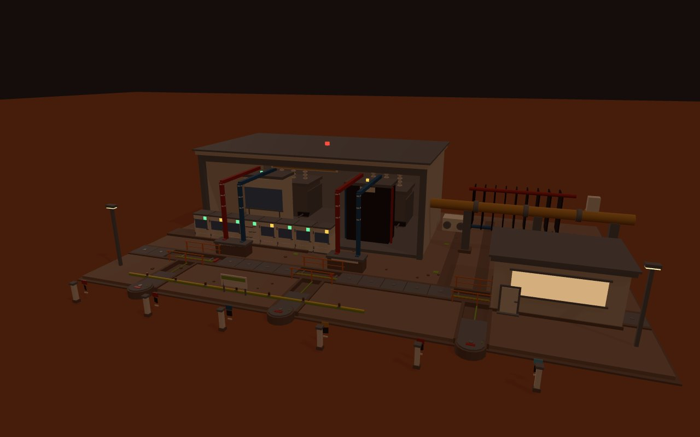
The city had been scoped for power three times, 1600× apart, and no document said which number belonged to which busbar.
EQUIPMENT.md sized it at 107 kWe for six Kilopower units. pwr-storage-01 verified an 833 kW islanded design point. power.html headlines 176 MWe net. All three are correct, and all three were being quoted interchangeably.
The apparent contradiction between the reactor's 390 MWe and the site's 176 MWe was never a contradiction at all: the same machine, read at two different busbars. 975 MW thermal × 40% gives 390 MWe at the generator terminals; 208 MWe walks straight back into the klystrons that keep the plasma current alive; 6.5 MWe more goes to the cryoplant. What crosses the fence is 176. Recirculating fraction 54.9%, engineering Qe 1.82.
Totalled item by item across fifty assets, the city draws 707 kW mean and 1,075 kW at coincident peak. Where a card stated no power, the load was closed against the asset's own heat-rejection geometry — on Mars there is no convection, so radiator area is the power meter.
Which produces the line that matters most to every future asset: the city consumes 0.40% of its reactor. The other 99.6%, converted at 5.45 kWh/kg, is roughly 618 kilotonnes of methalox per synod — about 515 Starship loads. pwr-fusion-01 was never sized for the city. It was sized for a propellant export industry, and the city is the rounding error living next door.
On Mars, energy is not the constraint. Conductor mass, heat rejection and insulation are.
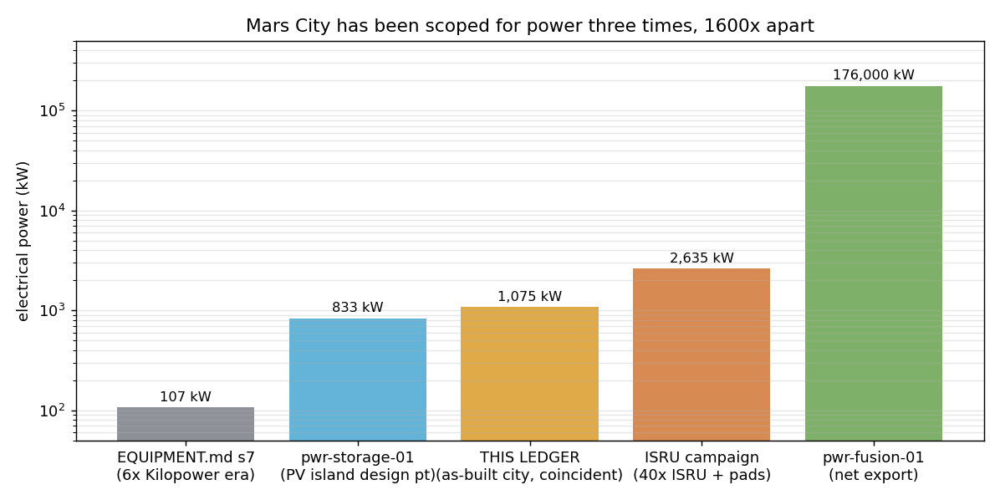
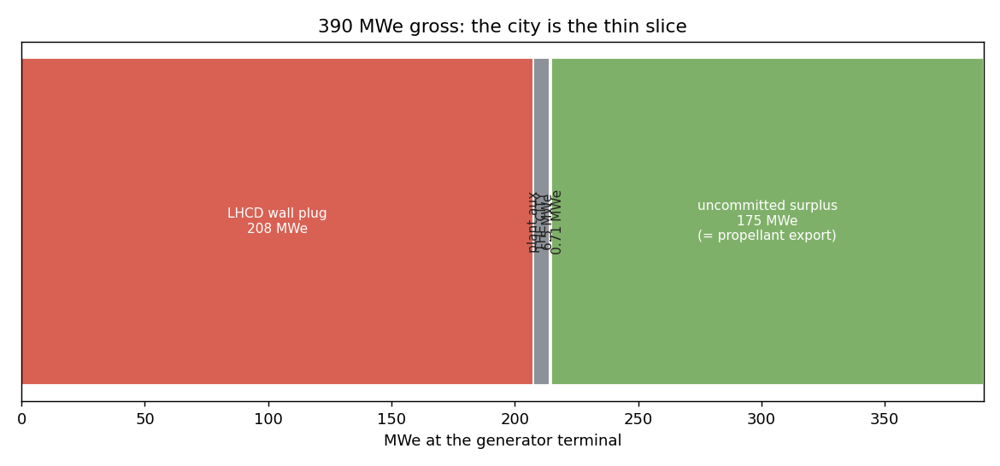
Six millibars of CO₂ puts every millimetre-scale gap almost exactly on the Paschen minimum. On Earth you only reach that condition inside a vacuum chamber during pump-down. On Mars it is the weather.
The global Paschen minimum for CO₂ is 249 V, and at Martian surface pressure it falls at a 1.17 mm gap — a gap that exists in every half-mated connector and every bolted flange with dust in it. On Earth that same minimum sits at 7 micrometres. Mars does not raise the breakdown voltage; it moves the worst case out of the laboratory and into the hardware store. Only 48 V is safe in the open, because it cannot strike an arc at any gap at all.
For an overhead line the binding number is corona. A bare 20 kV conductor eight metres up needs a 123 mm diameter to stay out of corona at Martian density; ampacity asks for 5.5 mm. At 132 kV there is no corona-free conductor at that height at all. Two independent routes — Peek's density scaling and the Townsend ionisation integral — agree within 9% two decades below where Peek was fitted, which is what licenses the result.
And a third, entirely independent veto: corona is a broadband HF noise source, and the city owns a low-frequency radio array whose own account fixes the pass line. A permanently discharging overhead line is the textbook way to fail it.
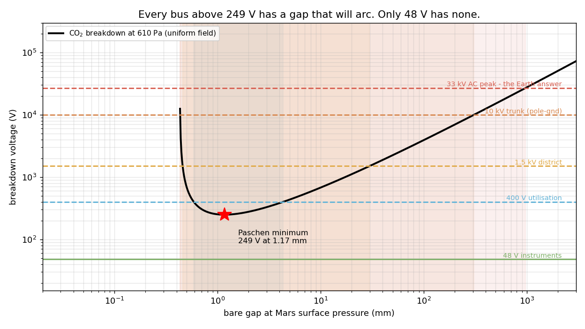
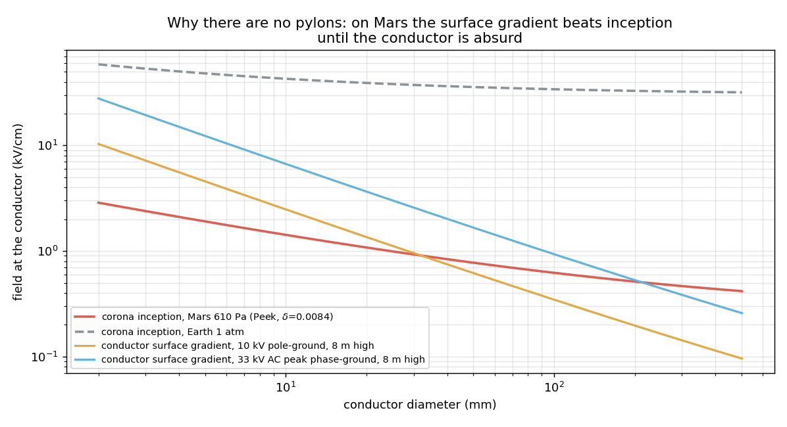
Dry, cold regolith runs 107–109 Ω·m. A 3 m rod that gives 34 Ω in moist Earth soil gives 34 megohm here. To reach the 5 Ω an Earth substation is designed to, the electrode would need an equivalent radius of 5,000 km — larger than the planet, whose radius is 3,390 km.
So Mars City is wired as an IT system: unearthed, isolated, with continuous insulation monitoring. A first earth fault trips nothing; it is annunciated and located while supply continues, which is the correct behaviour where loss of supply is a life-safety event. The “earthing grid” modelled at the substation is an equipotential bonding mesh, and fault current comes home on a dedicated metallic return conductor, never through the ground.
Calibre note: that punchline is stated at the nominal 108 Ω·m. At the wet-optimistic end the electrode is “only” 500 km. The engineering conclusion is unaffected across the whole range — a 100 × 100 m city mesh is 8,865× to 886,525× too resistive. The rhetoric is calibre-dependent; the design is not.
Corroboration that was already sitting in another session's file: the mars-heli charge dock budgets insulation monitor + contactor hold, 0.70 W. An insulation monitor is what an unearthed system needs and an earthed one does not. That session paid for it without saying why. This is why.
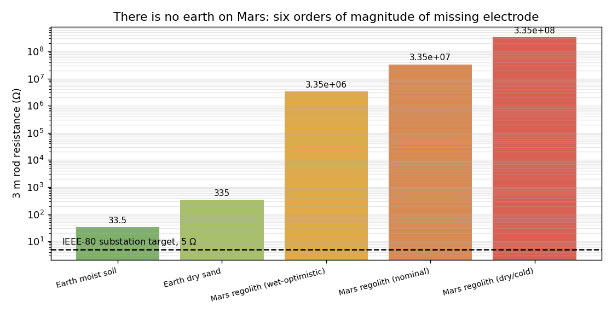
Conductor mass goes as 1/V² and nothing else in this problem does. On Earth that argument is about money; on Mars it is about how many Starships the cable costs.
The same 1.2 MW over 2 km at 2% loss needs 457 tonnes of aluminium at 400 V and 731 kg at 10 kV. Above about 20 kV the cable stops being loss-limited, so more voltage buys no more metal and only more insulation cost — which is where the optimum stops.
Bipolar DC needs half the conductor of three-phase AC at equal loss and equal peak dielectric stress; aluminium over copper takes that to a quarter. The textbook long-distance argument for DC does not apply at 2 km — the real argument is the load list. Klystron modulators, electrolysers, the battery field, LED grow lights, every VFD-driven pump, computing, the helicopter dock, robot chargers: not one load in the city genuinely wants AC. An AC bus would exist purely to be rectified again.
Then Mars charges for the burial it just demanded. Regolith conducts heat at 0.04 W/mK — a thirtieth of Earth soil. It refunds part of it, because at 210 K a cable is allowed a 153 K rise instead of 75, but a directly buried cable still carries a fraction of its Earth ampacity. Paschen drives you underground, and the ground punishes you for it.
There is a consolation, and it is a real one: four of IEC 60287's eight terms are identically zero here. DC has no dielectric loss, no sheath eddy loss and no armour loss; Mars has no liquid water to dry out, so the one Earth failure mode that makes buried cables derate unpredictably does not exist. A Martian DC cable is thermally simpler than an Earth AC one.
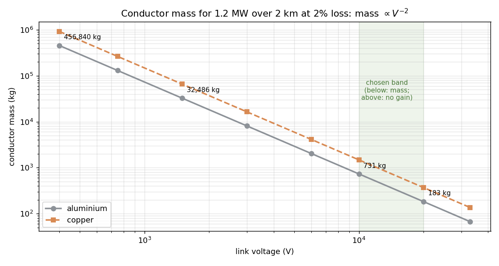
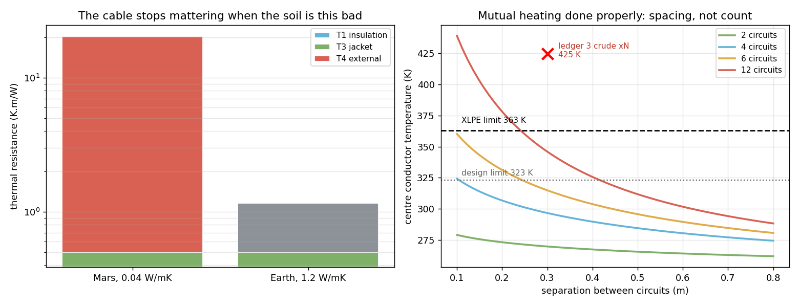
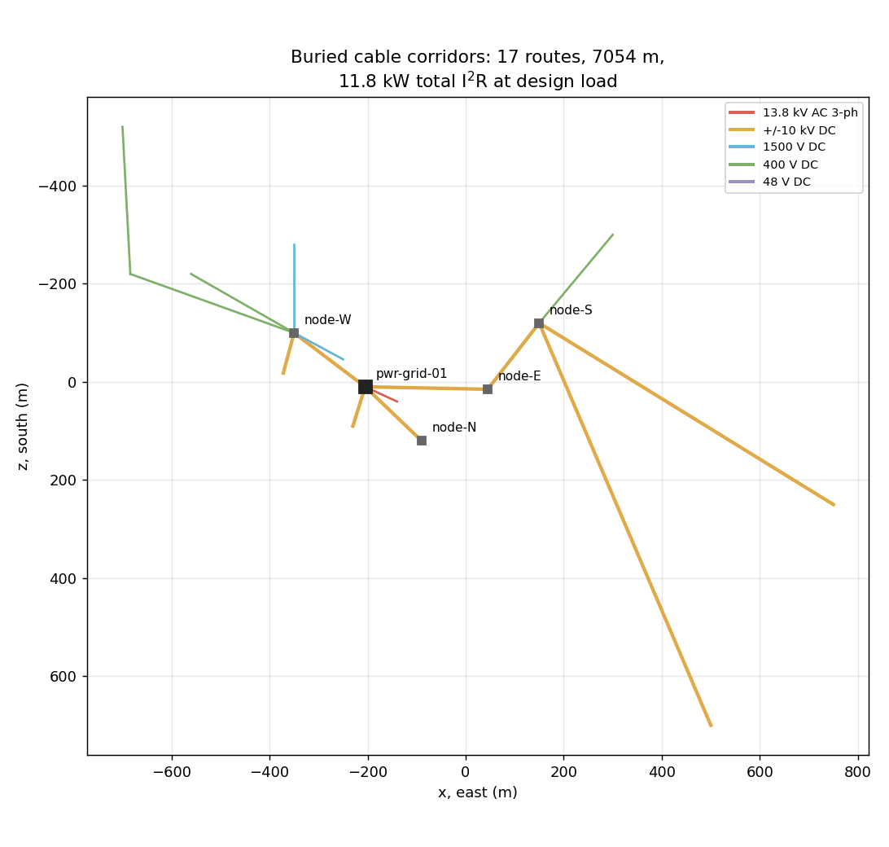
Islanding is a stopwatch, not a wall — and a global dust storm is not a power event at all.
The storage field's 2 MW inverter covers the entire unshed city with 3.3× margin, so islanding is never a power problem. It is an energy problem: 20 MWh divided by the load is 1.3 sols. The four-tier shedding ladder — ranked by what an interruption costs, not by importance — winds that out to 10.3 sols.
Which produced a closure nobody had written down. pwr-storage-01 verified that its field carries 145 kW for 30 sols at 15% residual sun. This dossier independently computes the city's survival tier — emergency life support, habitat thermal, comms, the lift, the airlocks, the seismic station — at 78 kW. Two sessions, two purposes, neither aware of the other, and the numbers close at 1.85×. That renames the asset: it is not “the other grid”. It is the survival grid.
A dust storm, meanwhile, moves the city up — to about 1.6 MW, because the greenhouse lamps go to full artificial photoperiod and the battery must be charged from the trunk instead of the sun. That is under 1% of supply. For Mars City a global dust storm is a logistics and abrasion event, not a power event, and that sentence is only true because the city stopped being solar-powered.
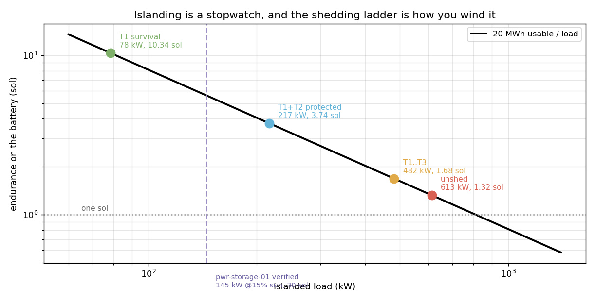
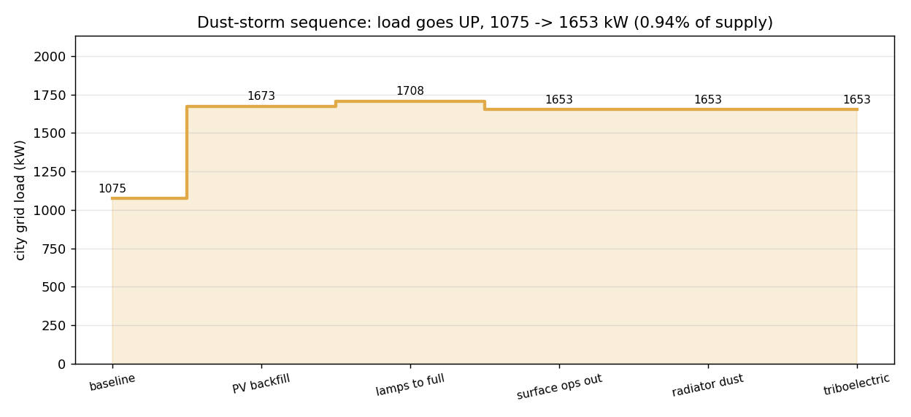
Closing every load against its own heat path is a check. Twice it stopped being a check and became a finding.
The undercity has 269 kW of heat and nowhere to put it. Thirty metres of rock conducts away 16 kW, and takes 32 years to reach even that; the deep lab pushes 29 kW into 3 km rock sitting at 232 K. The remaining 269 kW must be pumped to the surface and radiated, needing roughly 617 m² of panel — which exists in no asset. The three underground modules contain no heat-rejection geometry at all. The coolant loop that carries it costs 0.2 kW of pumping, because in a closed loop the up-leg and down-leg gravity heads cancel exactly: the missing item is the radiator, not the pump.
Radio quiet has a price, and nobody had paid it. The array does not only forbid pylons; it taxes the converter that was built instead. Slowing the valve edges from 1 to 5 µs buys 14 dB at 10 MHz and costs 9.9 kW — 1.4% of everything the city consumes, arriving as heat in the radiator bank.
And one rule that runs against standard practice: every commercial converter dithers its clock to pass CISPR, which smears each harmonic into a band. Beside a radio spectrometer that is exactly backwards. 297 discrete, predictable lines can be excised channel by channel; a smeared continuum raises the floor across the whole band and cannot be excised at all. Spread-spectrum clocking is therefore banned city-wide, and switching is phase-locked to the city time reference — the same clock the seismic station asked for, for a completely different reason.
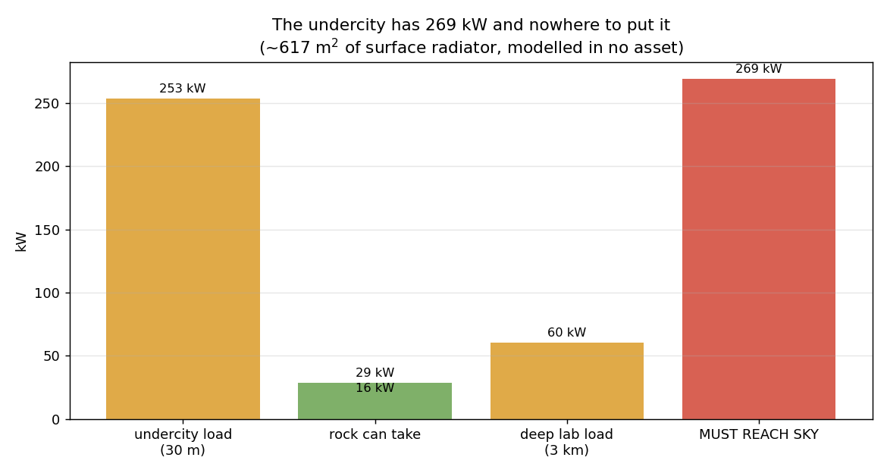
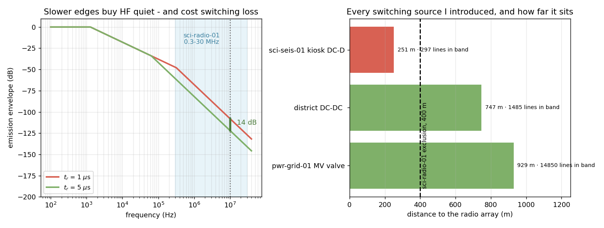
Ten analytic books, 71 gates, all green. Every headline number and the script that produced it.
| Claim | Value | Produced by |
|---|---|---|
| City load, mean / coincident peak | 707 / 1,075 kW | grid_01_load_ledger.py |
| Gross-to-net reconciliation | 390 − 208 − 6.5 = 176 MWe | grid_01_load_ledger.py |
| City share of its own reactor | 0.40% | grid_01_load_ledger.py |
| Paschen minimum, CO₂ at 610 Pa | 249 V @ 1.17 mm | grid_02_paschen.py |
| Corona-free conductor, 20 kV at 8 m | 123 mm dia | grid_02_paschen.py |
| Electrode radius for 5 Ω | 5,000 km | grid_02_paschen.py |
| Conductor mass law | ∝ V⁻², exact | grid_03_transmission.py |
| Bipolar DC vs 3-phase, equal loss | 0.50× conductor | grid_03_transmission.py |
| Islanded endurance, T1 survival | 10.3 sol | grid_04_islanding.py |
| Storage capability vs survival tier | 145 / 78 kW = 1.85× | grid_04_islanding.py |
| Seismic feeder red-line clearance | 30.2° (direct route 5.2°) | grid_05_seis_feeder.py |
| Corridor clash screen and reroute | 17 routes, 4 m detour | grid_06_corridor_audit.py |
| Converter efficiency at the city mean | 96.6% (98.0% at rating) | grid_07_converter_protection.py |
| Fault current with a 1 mH reactor | 943 A, 472 J absorbed | grid_07_converter_protection.py |
| Fab load, closed a second way | 137.7 vs 135.4 kW | grid_08_load_second_closure.py |
| Undercity heat with no path to sky | 269 kW · 617 m² | grid_08_load_second_closure.py |
| Cable internals, share of thermal circuit | 2.5% Mars / 43% Earth | grid_09_iec60287.py |
| Radio quiet, price in switching loss | 14 dB for 9.9 kW | grid_10_emc.py |
Six of the ten books exist because an earlier book was wrong. The gates caught every one, and most of them were mine.
48 V cannot travel. The environmental spur was drafted at 48 V for 234 m — a 28.7% voltage drop. 48 V is a utilisation voltage, not a distribution voltage. The mass law applies to my own design too.
The depth of a shaft is not the depth of everything it serves. The undercity feeder was hung off a 3 km riser because the lift descends 3,000 m. The lift does — but it passes the undercity level, which sits under 30 m of rock, on the way down. Split into two risers. The self-weight result survived and got cleaner: hanging stress is ρ·g·L and does not depend on cross-section at all, so 3 km of aluminium is 30 MPa whatever you choose — against 79 MPa on Earth. 0.38 g is what lets that riser be one continuous cable.
The cable trench was justified by an argument that turned out to be false. Ledger 3 claimed six buried circuits reach 424 K and fail. Replacing its single thermal term with the full IEC 60287 circuit showed two errors pointing opposite ways: mutual heating overstated 2× (multiplying by N assumes a neighbour 30 cm away couples as strongly as the cable to its own surface — the image method says 45%), and cable diameter taken as a fixed 60 mm when a 95 mm² cable is 27 mm, which was optimistic. Six circuits actually reach 315 K and pass; three trunks were up-sized. The trench survives on a corrected argument — it is what guarantees the spacing (15 cm → 343 K, 30 cm → 315 K, trench → 247 K). The geometry did not change; the reason did.
An unpaid assumption, after criticising someone else's. The radiator bank was sized off a blanket “98.5% efficient” converter — the same placeholder sin the helicopter session had confessed to, at a thousand times the scale. Paid off, the block is 96.6% efficient at the load the city actually draws, because 69% of the loss does not care what the city is doing. That overturned the rating too: 2×12 MVA had been chosen for “growth room” and never justified, and its transformer iron would have burned 243 MWh per Mars year for headroom nobody asked for.
The audit script overwrote its own input. One bad run poisoned the source file, and the next run cheerfully reported “no change needed” against its own corrupted output. A verification script must never overwrite the thing it verifies.
The auto-router exploited an exemption I had written myself, parking waypoints beside obstacles so the “terminates here” rule fired, and reported four reroutes totalling 1 m of detour. An answer too good to be true usually is.
And the cable trench was nearly modelled as a texture. The first version drew it on a solid slab, so the trench floor and every cable sat inside the platform box and rendered completely invisible — while the contract checker reported all green. Passing validation is not the same as being readable.
Open the main viewer, press C to raise the tech city, and add ?inspect=pwr-grid-01 to frame the substation. It sits between the reactor and the hub.
Walk to the front and the cable trench opens: three lids lifted, red and blue poles on their racks with the green bonding conductor above, an access ladder in the centre bay. The rectifier hall is cut away toward you — converter transformer left, valve stack right, one block closed and running and one opened for maintenance, which is the N−1 pair shown as a state contrast. The amber duct on piers is the only alternating current in Mars City, and it is 72 m long.
Follow the marker posts outward. The colour band gives the voltage level — amber 13.8 kV AC, red and blue the DC poles, cyan 1500 V, green 400 V, violet 48 V — and the chevron points the way the cable goes. That is the answer to the hardest visual problem in this design: the entire grid is buried, and it still has to be readable from the surface.
After dusk the SCADA window glows with the live power-flow bars, the valve-position strips light the open bay, and the marker-post reflectors pick out the corridors.
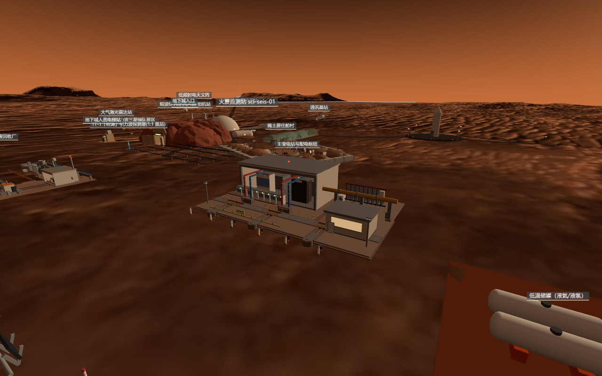